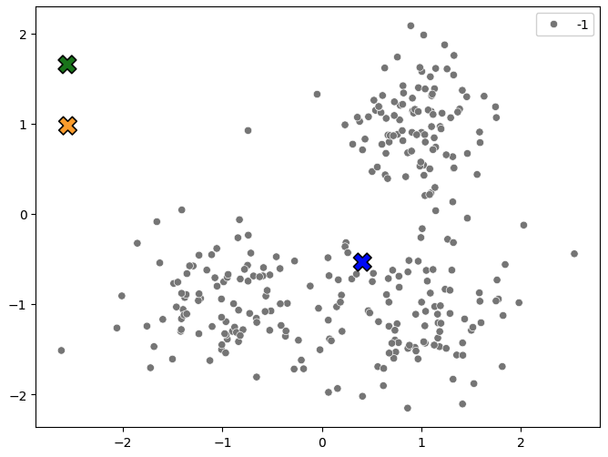
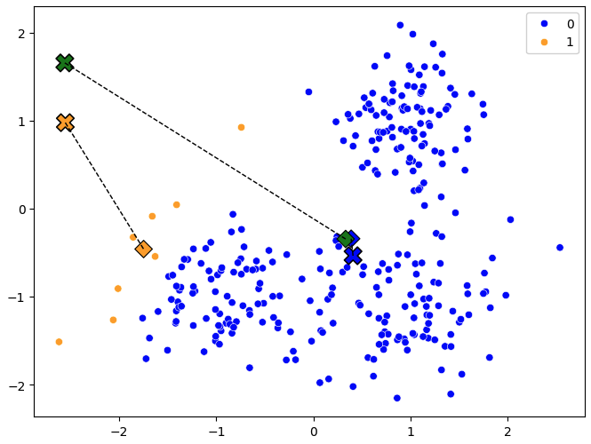
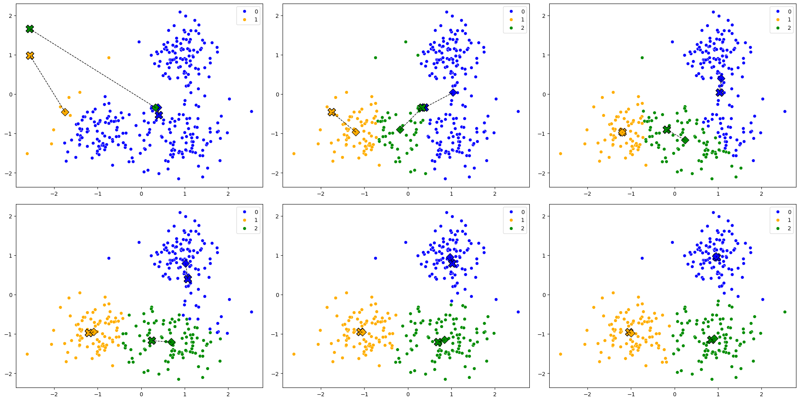
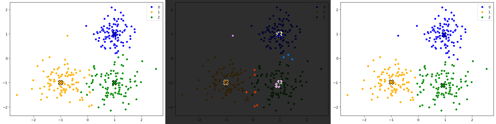

k-Means
Aiemmin esiteltyä kNN:ää ja nyt käsiteltävää k-Means algoritmia yhdistää kirjain k, mutta niiden merkitys on eri. k-Meansin kohdalla k tarkoittaa n_clusters eli klustereiden määrää, kun taas kNN:ssä k tarkoittaa naapureiden määrää. Toinen merkittävä ero algoritmien välillä on, että k-Means ei ole luokittelualgoritmi, vaan klusterointialgoritmi eli siis ohjaamaton koneoppimisalgoritmi. Kukin havainto kuuluu siihen klusteriin, jonka keskipiste on lähimpänä havaintoa.
k-Means algoritmi
k-Means on lähes yhtä simppeli algoritmi kuin k-NN. Aivan kuten k-NN, myös k-Meansiä voi käyttää n-ulotteisessa avaruudessa, mutta visualisoinnin vuoksi käytämme tässä esimerkissä vain 2-ulotteista avaruutta. Koulutuksen vaiheet voidaan tiivistää seuraavasti:
- Valitse
kklusteria, joihinmsamplea klusteroidaan. - Arvo satunnaisesti (x,y) koordinaatit
kklusterikeskuksille. - Nimitä kukin piste kuuluvaksi lähimpään klusteriin.
- Laske keskiarvo (x,y) jokaiselle
mhavainnolle. Siirrä klusterikeskukset näihin.
Vaiheet 3-4 toistetaan kunnes klusterikeskukset kunnes klusterikeskukset eivät enää muutu (tai jokin muu lopetusehto täyttyy).
Vaiheet kuvina
Alla esimerkki, joka on rautakoodattu toimimaan tasan 2-ulotteisessa avaruudessa.
Data on täysin kuvitteellista, mutta mikäli se helpottaa, niin voit kuvitella x:n ja y:n arvojen taustalle jonkin ilmiön. Esimerkiksi:
- x-akseli:
 silmälasien vahvuus (± 2.5)
silmälasien vahvuus (± 2.5) - y-akseli:
 ananas-pizzatäytteen tykkäysaste (± 2.5 σ)
ananas-pizzatäytteen tykkäysaste (± 2.5 σ)
Info
Tällöin datasetin oikean ylälaidan rypäs, jonka keskipiste on noin \((1, 1)\), koostuu kaukonäköisistä -pizzan ystävistä. Datasetin perusteella vaikuttaisi, että ananaksesta tykkääminen pizzan täytteenä on kaukonäköistä puuhaa. Kenties datasta puuttuu jokin merkittävä piirre, kuten se, että onko kyseessä purkki- vai tuoreananas?
Vaihe 1: Valitse k
Valitaan klustereiden määrä k eli n_clusters. Tässä esimerkissä valitaan k=3. Data on generoitu siten, että me satumme tietämään klustereiden määrän etukäteen. Tässä yksinkertaisessa esimerkissä se olisi myös nähtävissä paljaalla silmällä katsomalla pistekuvaajaa.
Vaihe 2: Arvo satunnaiset klusterikeskukset
Huomaa, että alla olevan kuvaajan (Kuvio 1) pisteet kuuluvat -1 klusteriin, mikä piirretään tässä tapauksessa harmaana pisteenä. Sen sijaan kullakin klusterilla on on id, joka on kokonaisluku range(k) eli tässä tapauksessa 0, 1, 2. Klusterien lokaatio on täysin satunnainen.

Kuvio 1: Klusterikeskukset satunnaisesti valittuna. Sallimme tässä esimerkissä arvonnan käyttää mitä tahansa arvoja välillä -3 ... 3 eli jopa pisteavaruuden ulkopuolelta.
Vaihe 3: Laske etäisyydet
Klusteriin kuuluvan pisteen määrittämiseksi lasketaan etäisyys jokaisen klusterin keskipisteen ja pisteen välillä. Piste kuuluu siihen klusteriin, jonka keskipiste on lähimpänä pistettä. Tämä tehdään alla olevalla koodilla:
@dataclass
class Point:
x: float
y: float
cluster: int = -1
@dataclass
class Centroid:
x: float
y: float
cluster: int
def assign_points_to_centroids(points: list[Point], centroids: list[Centroid]):
for point in points:
# Euclidean distances to the three centroids
distances = [
((point.x - centroid.x)**2 + (point.y - centroid.y)**2)**0.5
for centroid in centroids
]
# Fetch the centroid with the smallest distance
indx = distances.index(min(distances))
closest = centroids[indx]
# Assign the point to the closest centroid
point.cluster = closest.cluster
return points
Tip
Koska datalla ei ole varsinaisesti "labelia", käytämme jatkossa sanaa "cluster" viittaamaan klusteriin, johon piste kuuluu, ja välttelemme sanan "label" käyttöä.
Vaihe 4: Laske uudet klusterikeskukset
Kun jokainen piste on määritetty kuuluvaksi lähimpään klusteriin, lasketaan jokaisen klusterin pisteiden keskiarvo. Tämä keskiarvo on uusi klusterikeskus. Tämä tehdään alla olevalla koodilla:
def compute_new_centroid_locations(points: list[Point], centroids: list[Centroid]):
for centroid in centroids:
# Subset of points matching the i'th cluster
cluster_points = [point for point in points if point.cluster == centroid.cluster]
# Mean of columns (x and y)
n = len(cluster_points)
# If this cluster was too far away from any points, move it to the middle of ALL points
# This is to avoid divizion by zero
if n == 0:
centroid.x = sum([point.x for point in points]) / len(points)
centroid.y = sum([point.y for point in points]) / len(points)
continue
new_x = sum([point.x for point in cluster_points]) / n
new_y = sum([point.y for point in cluster_points]) / n
# Stopping condition
if new_x == centroid.x and new_y == centroid.y:
print(f"We have met the stopping condition.")
return None
centroid.x = new_x
centroid.y = new_y
return centroids
Alla olevassa kuvassa (Kuvio 2) näkyy klusterikeskukset ja niiden lokaatiot ensimmäisen iteraation jälkeen. Klusterikeskukset ovat siirtyneet lähemmäs klusteriin kuuluvia pisteitä. Huomaa, että vihreä klusteri (cluster 2) arvottiin epäonniseen paikkaan, ja sitä lähimpänä ei ollut yksikään piste. Tämän vuoksi klusterikeskus siirtyi keskelle kaikkia pisteitä (ks. yllä olevasta koodista n == 0-kohta).
Tip
Vaihtoehtoinen tapa ratkaista ongelma olisi arpoa klusterikeskukset lähemmäs kuuluvia pisteavaruuden keskustaa. Yksi monista tavoista on se, että ottaa random.sample(points, k)-funktiolla k-kappaletta satunnaisia pisteitä ja asettaa ne klusterikeskuksiksi.

Kuvio 2: Klusterikeskukset siirtyneet lähemmäs klusteriin kuuluvia pisteitä. Ruksi edustaa vanhaa lokaatiota, pystyneliö uutta lokaatiota.
Vaihe N: Toista kunnes klusterikeskukset eivät enää muutu
Huomaa compute_new_centroid_locations-funktion palauttama None, joka kertoo, että klusterikeskukset eivät enää muuttuneet. Tämä on meidän lopetusehto. Voimme siis kouluttaa algoritmin loppuun muutoin loppumattomassa silmukassa. Järkevä koodaaja laittaisi myös max_iter-parametrin, joka estäisi silmukan jatkumisen loputtomiin. Se puuttuu tästä esimerkistä.
while True:
# Take a deep copy for plotting purposes
prev_centroids = deepcopy(centroids)
# Compute
points = assign_points_to_centroids(points, centroids)
centroids = compute_new_centroid_locations(points, centroids)
if centroids is None:
break
plot_data(points, prev_centroids, centroids)
Klikkaa plot_data koodi esiin
def plot_data(
points:list[Point],
centroids:list[Centroid],
future_centroids:list[Centroid]=None):
# Set up canvas
plt.figure(figsize=(8, 6))
color_mapping = {0: 'blue', 1: 'orange', 2: 'green', -1: 'grey'}
# Display the points
sns.scatterplot(
x=[point.x for point in points],
y=[point.y for point in points],
hue=[point.cluster for point in points],
palette=color_mapping,
)
# Display the centroids
sns.scatterplot(
x=[centroid.x for centroid in centroids],
y=[centroid.y for centroid in centroids],
hue=[centroid.cluster for centroid in centroids],
palette=color_mapping,
s=200,
marker="X",
edgecolor="black",
legend=False
)
if future_centroids is not None:
# Display the soon-to-be-centroid locations
sns.scatterplot(
x=[centroid.x for centroid in future_centroids],
y=[centroid.y for centroid in future_centroids],
hue=[centroid.cluster for centroid in future_centroids],
palette=color_mapping,
marker="D",
s=100,
edgecolors="k",
legend=False
)
# Plot dotted lines between current and future centroids
for i, centroid in enumerate(centroids):
plt.plot([centroid.x, future_centroids[i].x],
[centroid.y, future_centroids[i].y],
"k--", lw=1)
plt.show()
Alla olevassa kuvassa näkyvät kaikki iteraatiot (mukaan lukien aiempi), jotka näillä lähtöarvoilla käynnistetty silmukka tuotti.

Kuvio 3: Kaikki iteraatiot, jotka k-Means algoritmi tuotti. Jokainen klusterikeskus on merkitty ristillä ja neliöllä. Kannattaa avata kuva uudessa välilehdessä suurempana.
Evaluointi
Huomaa, että todellisen klusteroinnin tapauksessa emme voi evaluoida mallin suoritusta vertaamalla sitä oikeaan ratkaisuun, koska kyseessä on ohjaamaton oppiminen. Jos meillä olisi havaintojen luokat jo tiedossa, meillä ei olisi syytä käyttää koko algoritmia. Tässä esimerkissä me kuitenkin tiedämme, mikä on havaintojen alla piilevä logiikka, joten voimme verrata ennustettuja pisteiden klustereita oikeisiin klustereihin.
Koodina sen voi tehdä käytännössä näin:
# Compare the labels to the predictions
correct = 0
for a, b in zip(predicted_points, actual_points):
if a.cluster == b.cluster:
correct += 1
print(f"Accuracy: {correct / len(points) * 100:.2f}%")
Kuvana se näyttäisi tältä:

Kuvio 4: Vertailu alkuperäisten klustereiden ja ennustettujen klustereiden välillä. Vasemmalla on alkuperäinen datasetti, oikealla ennustettu, ja keskellä on näiden RGB difference.
Warning
Muista kuitenkin, että "accuracyn" laskeminen klusteroinnin tapauksessa on hieman kyseenalaista monestakin syystä.
- Ilmiselvä syy on jo yllä mainittu, eli jos käytämme klusterointialgoritmia, niin meillä ei ole oikeaa vastausta.
- Toinen syy on, että vaikka meillä onkin dummy-dataa, niin klustereiden järjestys on täysin sattumanvarainen ja riippuu siitä, minne klusterikeskukset arvotaan. Olisi siis täysin mahdollista, että k-NN olisi arponut vasemman alalaidan klusterinkeskukseksi vihreän klusterin.
- Me olisimme voineet päättää segmentoida meidän pisteet kolmen klusterin sijasta kahteen, neljään tai johonkin muuhun
k=n-määrään. Nämä eivät olisi sen enempää oikeita tai vääriä vastauksia; me saisimme vain segmenttejä, joissa on enemmän tai vähemmän varianssia.
Tehtävä
Tutustu myös muihin klusterointialgoritmeihin, kuten DBSCAN, vähintään pintaraapaisuna. Hyvä paikka aloittaa on Scikit-Learn: Clustering.